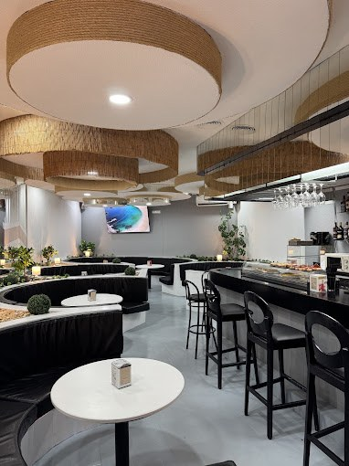
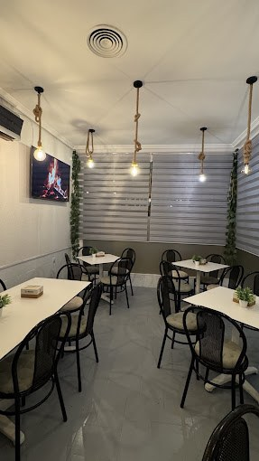

Abrimos todos los días menos el martes, desde las 9:00
El Rincón de Marinela
Bar y cafetería en Mota del Cuervo. Café desde las nueve, menú del día a mediodía y raciones y burgers hasta la noche.
La luz del Rincón
Sigue la hora real de Mota del Cuervo.
La carta
Todo lo que sale de la cocina, con sus precios. Las de toda la vida y las que se han ganado un sitio.
Cada plato se hace en el momento, con producto fresco y casero. Gracias por la paciencia.
El local
Sofás negros en curva, mesas blancas y lámparas de cuerda. Barra, comedor y terraza.


- Aquí irá la terraza, un viernes por la noche
- Aquí irá la fachada
Horario
| Lunes | 9:00 – 23:00 |
|---|---|
| Martes | Cerrado |
| Miércoles | 9:00 – 23:00 |
| Jueves | 9:00 – 23:00 |
| Viernes | 9:00 – 24:00 |
| Sábado | 9:00 – 24:00 |
| Domingo | 9:00 – 24:00 |